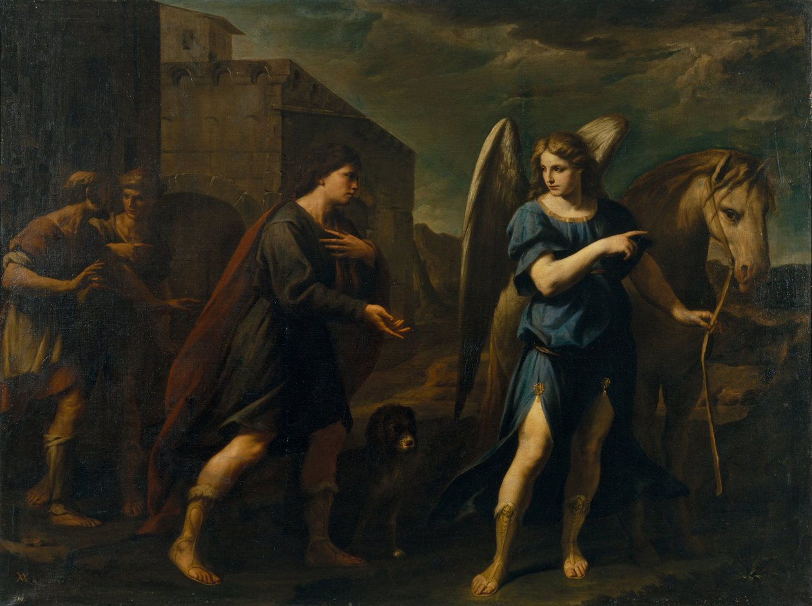

Para cuando estés enferma

"Dios ha sanado"
Hola, Sophi.
Si estás leyendo esto es probablemente porque no te encuentras bien.
Qué bueno que estés aquí, puesto que escribí esto con el propósito de contarte cosas muy importantes referentes a la enfermedad.
Quizás es algo pasajero. Quizás ya vas varios días así.
O quizás es algo mucho más serio.
No sé por cuál de estas cosas estés atravesando en este momento.
Así que no te puedo prometer que mañana estarás sana.
Pero hay algo que sí te puedo prometer:
Porque Cristo no está solo cuando nos sentimos bien y estamos fuertes.
Sino también en estos momentos.
«Jesús nunca trató el sufrimiento humano como algo que no importara.»
Los Evangelios están repletos de enfermos que se acercaron a Él.
Y cuando no se concede inmediatamente la curación que alguien pide, nunca deja de amar a esa persona.
Y creo que esto es el fundamento de este encuentro.
A pesar de todo esto, podrías estarte preguntando algo muy lógico:
Si Dios puede curarme,
¿por qué permite que esté enferma?
No tenemos una respuesta completa para cada sufrimiento concreto.
Pero tenemos una respuesta completa acerca de quién está contigo mientras sufres.
Cristo.